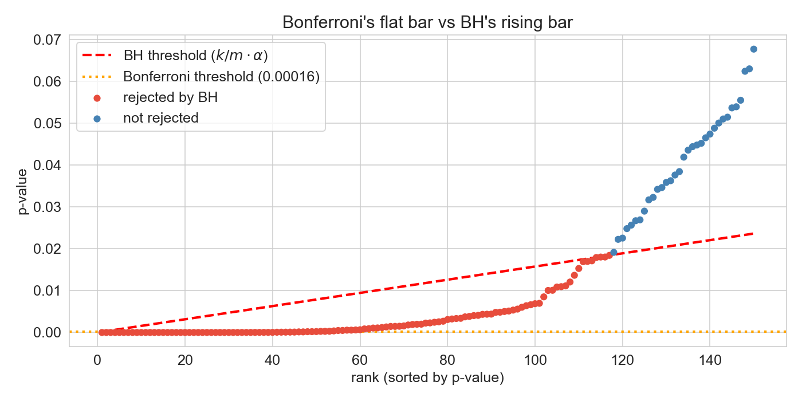
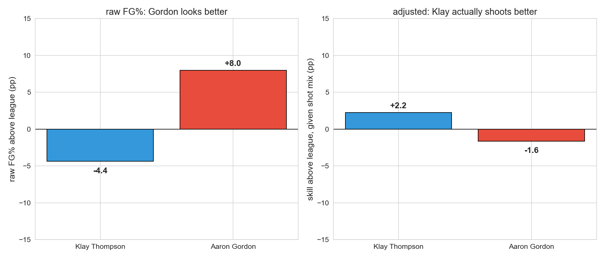

Lecture 11: Multiple Testing
MSE 125 — Applied Statistics
Monday, May 4, 2026
logistics
quiz 5 : Wed May 6HW 3 : due Fri May 8
START RECORDING.
Quiz 5 next class. HW 3 due Friday — uses multiple testing and correlation directly. Wednesday’s lecture (regression inference) is the natural follow-up to today’s “fix the question, not just the threshold” closing.
the brief
you’re an analyst for the NBA Director of Player Personnel .
last season’s shooting numbers are on your desk — every player’s makes and attempts. your boss asks one question:
“which of our players really shoot better than the league average?”
how would you tackle this?
Frame the lecture as a decision problem, not a topic to cover. We are not here to “demonstrate multiple testing” — we are here to answer a real question that any sports analyst would face. Which of last season’s rotation players really shoot above league average?
Two ways the obvious approach fails: - Block 1 (multiple testing): run a z-test per player at p < 0.05 . We’ll see far more rejections than the math allows under the null — but the rejections are mostly noise, and the analyst who reports them ships a list full of false positives. - Block 3 (confounding): the corrections give us a tight list of “real” departures. But the most extreme high outlier turns out to be a worse shooter than the most extreme low outlier — once we look at where each one shoots from. Right answer, wrong question.
Don’t tease the numbers (141, 47, 117) — those land in the next two blocks. Today’s hook is the question, not the punchline.
today
the multiple testing problem
two corrections: Bonferroni and Benjamini-Hochberg
right answer, wrong question: confounding and Simpson’s paradox
Two halves linked by one theme: statistical results can mislead even when the math is right. First half — multiple testing — is about false discoveries: tests that fire when nothing real is there. Second half — confounding — is about discoveries that are real but answer the wrong question. Both are diagnosed using the same NBA shot-zone dataset.
the multiple testing problem
the data: shots by zone
shot_zones_2023-24.csv — for each NBA player, field goals made (FGM) and attempted (FGA) in each of six shot zones. FG% = FGM / FGA.
RA — restricted area (under the basket)PAINT — rest of the painted laneMID — mid-range (inside the arc)LC3, RC3 — corner threesATB3 — above-the-break threes
source: NBA.com Stats, 2023–24 regular season
Six zones, ordered rim outward. The granularity matters for the second half — it’s how we’ll diagnose Simpson’s paradox. For now we’ll just aggregate to overall FG%.
Footnote: the CSV is the NBA.com Stats six-zone breakdown, which excludes back-court heaves and a few unclassified attempts. Klay’s CSV FGA = 1,131; Basketball-Reference’s official total is 1,230 (includes long heaves). The Simpson reversal we’ll reach in Block 3 doesn’t depend on this — it persists with either denominator — but the on-screen numbers (43.3%, 55.7%, 47.7% league baseline) are computed over the six-zone subset.
who shoots above league average?
= pd.read_csv('data/nba/shot_zones_2023-24.csv' )= shots[shots['FGA' ] >= 200 ].copy()'FG_PCT' ] = qual['FGM' ] / qual['FGA' ]= qual['FGM' ].sum () / qual['FGA' ].sum ()Players (rotation, FGA >= 200): 317
League FG% (qualified players): 0.4770extremes:
Jarrett Allen : 63%Rudy Gobert : 66%Jevon Carter : 38%
are these gaps real , or could they happen by chance over a season’s worth of shots?
Filter to rotation players — minimum 200 attempts so individual tests have power. League baseline 47.7% across qualified shots. Extremes named to anchor the question. Filter cutoff is itself a researcher degree of freedom we’ll come back to in the replication-crisis discussion.
bernoulli’s free lunch
Lec 10 : two samples (treatment vs control), continuous outcome. SE pooled from both arms.
now : one sample (one player), binary outcome (made or missed). no control.
how do we get a standard error with no control?
bernoulli: variance per shot = p(1-p) — mean determines variance.
under H_0: p = p_0 , the SE is pinned at \sqrt{p_0(1-p_0)/n} .
no second group. no estimation from data. null carries its own SE.
The bridge slide students needed and didn’t get on first delivery. Two jumps at once from Lec 10:
Two samples → one sample.
Continuous outcome → binary outcome.
Both rest on the same Bernoulli property: σ² = p(1−p). Once H₀ specifies p, the variance is known, so the SE is too. No control group, no estimation from data. That’s the free lunch.
For continuous outcomes the variance is a free parameter — must be estimated from data, hence the t-distribution penalty (t_{n−1} instead of N(0,1)).
Pace: ~90 sec. Pause after fragment 3 (“how do we get a standard error with no control?”) and let students answer before revealing fragment 4. The next slide drops the formula and the 141/317 headline; the slide after sharpens the z-vs-t comparison.
one test per player
one-sample z-test for a proportion — large-FGA normal approximation.
for each player i , test H_0: p_i = p_0 where p_0 = 0.477 (league):
z_i = \frac{\hat p_i - p_0}{\sqrt{p_0(1-p_0) / \text{FGA}_i}} \sim \mathcal{N}(0, 1)
run it 317 times.
Tests run: 317
Significant at p < 0.05: 141
One-sample two-sided z-test for a proportion — motivated on the previous slide (Bernoulli’s free lunch). Same recipe as Lec 10’s t-test (standardized distance from the null), but with the SE pinned by H₀ rather than estimated from data. 141 of 317 — about 45% of the league — comes back significant. That number triggers the rest of the lecture.
z-test or t-test?
both standardize the gap: \dfrac{\text{statistic} - \text{null}}{\text{SE under null}}
t-test (continuous, e.g. CD4 counts):
SE estimated from data: \hat\sigma / \sqrt{n}
reference: t_{n-1} (extra uncertainty from \hat\sigma )
z-test for a proportion (binary, e.g. made/missed):
SE pinned by H_0 : \sqrt{p_0(1-p_0)/n} — nothing to estimate
reference: \mathcal{N}(0, 1)
both = large-n limit of the bootstrap (Lec 8). bootstrap works for any n ; z and t are the CLT shortcuts.
The bridge for students who know t-tests but haven’t seen z. Two ideas to land:
Same recipe: standardized distance from the null, then look up tail probability. The two tests differ only in (a) how you get the SE and (b) which reference distribution you use.
Why z here: the binomial SE is determined by p_0 alone — no estimation needed because H_0 fixes the variance. For a continuous outcome the variance is a separate unknown, so you have to estimate it from the data and pay the t-distribution penalty for the extra uncertainty.
Bootstrap connection: Lec 8 introduced the bootstrap as resampling the data and looking at the empirical distribution of the statistic. Both t and z are CLT-driven approximations to that. For a mean: bootstrap → normal centered at true mean, sd = s/√n; the t-test corrects for the small-sample sd estimate. For a proportion: bootstrap → normal centered at true p, sd = √(p(1−p)/n); the z-test plugs in the null p_0 since H_0 specifies it. The bootstrap works for both; z and t are the closed-form CLT shortcuts.
When to use each: continuous and want to compare to a fixed value → t. Binary and want to compare to a fixed proportion → z (or equivalent: a binomial test, exact for any n). Continuous with huge n and known sd → z works too, but t is safer.
This slide is dense. Consider stepping through the fragments slowly. If running long, skip the bootstrap line — it’s a recall, not new content.
if each player’s true FG% equaled the league baseline, how many of 317 tests would you expect to appear significant at \alpha = 0.05 ?
give a number.
DISCUSSION: think-pair-share (3 min). 30 sec think; 1 min pair; debrief.
Goal: get students to compute m × α = 317 × 0.05 ≈ 16 by themselves. Most will land near 16; some will say “5%” without converting. Push for a count , not a rate.
If stuck: “if you had a fair coin and flipped 100 times, how many heads would you expect?” — same expectation argument.
Key insight: linearity of expectation gives 16 false positives even under H₀ for everyone. Tests don’t need to be independent for this — works for correlated tests too. The next slide formalizes.
expected by chance
if H_0 holds for every player:
\mathbb{E}[\text{false positives}] = m \cdot \alpha
Tests: 317
Expected false +ves: 15.9
SD under null: 3.9 # = sqrt(m · α · (1−α))
Observed significant: 141
Excess over null: 125 (32.3 SDs)
125 over the null floor — real signal . but mixed with ~16 fakes.
Key arithmetic. Even with 317 totally null tests, expect ~16 false positives at p < 0.05. We observed 141. The excess is overwhelming — something real is going on. But we don’t yet know which of the 141 are real. Multiple testing is exactly the problem of separating signal from the noise floor.
Note the parenthetical “linearity of expectation holds even with correlated tests” — keep it verbal, don’t crowd the slide.
the multiple testing problem
when many hypothesis tests are run, a predictable fraction will clear \alpha = 0.05 by chance alone.
with m tests at level \alpha : expect m \cdot \alpha false positives.
it doesn’t matter who runs the tests:
one analyst runs 317 tests → expect 16 false positives1,000 labs each run one test → expect 50 false positives
The arithmetic is the same whether the multiplicity is in one analyst’s notebook or spread across the literature. This is the bridge to the replication crisis on the next slide.
the p-value histogram: a diagnostic
under H_0 : p-values are Uniform(0, 1) — flat.
predict : what does our 317-player histogram look like?
INLINE PREDICT (15 sec): “under H₀ p-values are uniform — flat histogram. given that 141 of our 317 already rejected at p < 0.05, what shape will the histogram have?” Take a guess.
Reveal: spike near zero + flat tail at the null floor (~16 per bin). The probability integral transform — applying any continuous CDF to its own random variable produces a uniform draw — is what guarantees uniform p-values under H₀. So a histogram tells you immediately whether your tests have any signal: flat = nothing, spike = something.
Here the first bin towers over the rest. Real signal is unmistakable. The flat tail tells you roughly how many of the small p-values are chance — about 16 per bin.
this isn’t just NBA
The bridge from the NBA arc into science. The cartoon does dual duty in one panel:
Multiple testing arithmetic. 20 colors of jellybean, 20 independent tests at \alpha = 0.05 . Under the null you expect ~1 false positive. Green pops up.
Publication bias / file drawer. Only the “significant” finding makes the news. The 19 negative results are invisible. By the time the public reads the headline, the multiplicity that produced it has been erased.
This is the same arithmetic we just ran on 317 NBA players — just spread across studies, labs, and the press instead of one analyst’s notebook. ~30 seconds for the room to read and laugh.
Verbal bridge before clicking forward: “the NBA had 317 tests on one analyst’s screen. Science has the same problem distributed across labs and journals — and the stakes are quite a bit higher than getting Aaron Gordon’s FG% wrong.”
what’s at stake
a published false positive doesn’t sit on a shelf — someone acts on it.
medicine : Amgen tried to replicate 53 landmark cancer studies — confirmed only 6 (Begley & Ellis, Nature 2012). Failed preclinical work feeds drug trials that cost ~$1B each.psychology / policy :
“power posing” (Cuddy 2010) → 50M+ TED views, corporate trainings → didn’t replicate .
“Growth mindset” interventions → district-wide rollouts, near-zero average effect .
biomedical waste : Freedman et al. (2015) estimate $28 B/year spent in the US on preclinical research that doesn’t reproduce.
cost isn’t just dollars: patients enrolled in trials, students taught by failed interventions, policy built on phantom effects.
The “why care” slide. The arithmetic on the previous slide is mechanical; this slide is the consequence in fields where stakes are high.
Begley & Ellis (2012, Nature 483:531) : Amgen’s hematology/oncology team tried to replicate 53 “landmark” preclinical cancer findings before building drug programs on them. They confirmed 6 (11%). Bayer ran a parallel exercise (Prinz, Schlange, Asadullah 2011) on 67 target-ID papers and reproduced fewer than 25%. This isn’t psychology — it’s the foundation of cancer drug development, where each failed clinical trial costs hundreds of millions and exposes patients to real risk.
Power posing (Carney, Cuddy, Yap 2010) : claimed 1-min “high-power” poses raised testosterone, lowered cortisol, increased risk-taking. Cuddy’s 2012 TED talk has 70M+ views and is one of the most-watched ever. Corporate training programs adopted it. By 2016 the original co-author Dana Carney had publicly disavowed it as not replicable.
Growth mindset : Carol Dweck’s work led to interventions deployed in tens of thousands of K-12 classrooms. Large-scale RCTs (Sisk et al. 2018 meta-analysis; Yeager & Dweck 2019 NSGM trial) found average effects near zero or very small, with most studies underpowered. School districts spent millions on programs whose population-level benefit is now in serious doubt.
$28B figure : Freedman, Cockburn, Simcoe (2015, PLOS Biology) — based on irreproducibility rates from preclinical biology, life-sciences R&D spending, and downstream costs.
The point of this slide is that “replication” is not academic hygiene. It determines what diseases get treated, what students get taught, what policies get adopted.
the replication crisis: numbers
2011 — Bem (precognition) : standard methods, top journal, conclusion: people sense the future. published, then unreplicable.2015 — Reproducibility Project : 100 psychology studies retried. ~36% replicated with significance. effect sizes roughly half the originals.2026 — SCORE : 274 claims across 164 papers, 54 social/behavioral journals. 55% of claims replicated; given the same data, only 34% of independent analysts using defensible alternative specs reached the original conclusion.
Three data points in a fifteen-year arc. Bem isn’t the cause — it was the embarrassment that made the crisis visible. The 2015 and 2026 numbers are the empirical scale.
SCORE caveats: economics and political science fared notably better (>85% computationally reproducible, 72% surviving reanalysis). The crisis isn’t uniform — it reflects structural features of how research is done in different fields.
hidden multiplicity: p-hacking
even one analyst running “one test” is hiding multiplicity:
exclude an outlier? that’s a choice
which outcome variable? that’s a choice
collect more data until significant? that’s a choice
which subset to analyze? that’s a choice
each choice is an implicit hypothesis test . the final reported p is the survivor of many.
Andrew Gelman’s “garden of forking paths.” Each fork in the analysis is an implicit comparison. Even a researcher who runs only “one test” at the end may have made dozens of choices upstream that constitute hidden multiplicity.
Simmons, Nelson, Simonsohn (2011) showed exploiting a few common degrees of freedom — optional stopping, control for gender, drop a condition — produces p < 0.05 for nonexistent effects more than 60% of the time.
Next slide: students apply the idea to a concrete analyst’s notebook.
your boss: “find me a clutch shooter.” you pick Player X and test:
4th quarter
0.18
last 5 min
0.12
last 2 min
0.09
last 2 min, score within 3
0.04 ✓
…same, home games only
0.02 ✓
write-up: “Player X shoots above league average in clutch home situations, p = 0.02 .”
what’s the chance you’d find something significant under the null?
DISCUSSION: spot-the-forks (5 min). 1 min think; 2 min pair; debrief.
This is Andrew Gelman’s garden of forking paths (Gelman & Loken, 2014) made concrete. The reported p = 0.02 is not the probability the analyst would have seen this result by chance — it is the probability conditional on this exact sequence of restrictions. The relevant probability is “would I have found some sub-restriction with p < 0.05 under the null?” — and that is much larger.
Forks visible in the table (5):
Quarter window: 4th, last 5, last 2, last 1, last 30 sec, last 10 sec…
Score margin: within 1, 2, 3, 5, 10, “any close game”
Home / away / both
Stopping rule: “I’ll stop when I find p < 0.05 ” (optional stopping)
Sign of the effect: above league, below league, “different from league”
Forks invisible in the table (just as many):
Choice of player (Player X vs Y vs Z — 50+ candidates)
Definition of “shot” (FGA only? include free throws? assisted vs unassisted?)
Outcome metric (FG%? eFG%? TS%? points-per-shot?)
Reference comparison (league average? his own season average? historical clutch baseline?)
Time period (this season? career? last 3 seasons?)
How to handle missing/garbage-time minutes
Effective \alpha . Even taking only the 5 visible forks at face value, 1 - 0.95^5 \approx 23\% — and if you keep going through the invisible forks (30+ plausible analyses), the chance of finding something at p < 0.05 under the null is essentially 1. The reported p = 0.02 massively understates the actual evidence.
The takeaway to land before the next slide: the analyst here didn’t lie. Each test was honest. Each p -value was correctly computed. The “garden” is not in any one test — it’s in the choice of which tests to look at and which to report . Bonferroni and BH can’t help here because they only correct for the tests you tell them about. → next slide: structural pressure makes the file drawer worse, then xkcd, then the actual fix (pre-registration) on the slide after.
structural pressure
two features of science amplify the problem:
file drawer : null results don’t get publishedincentives : careers are built on novel significant findings
if 20 labs test the same false hypothesis, one will publish a significant result by chance — and that’s the only one you read
The file drawer problem: published literature is a biased sample of all research conducted. Combined with publication and career incentives that reward significance, the system selects for false positives that look like real discoveries.
This isn’t accusing anyone of fraud — it’s a structural feature.
the fix: pre-registration
publicly committing to your research question, data plan, and analysis plan before looking at the data.
a pre-registered analysis is a single pre-specified test — not the survivor of many.
doesn’t ban exploration — requires labeling it as exploratory , not confirmatory
Pre-registration eliminates researcher degrees of freedom by fixing the analysis upfront. It doesn’t prevent exploratory analysis — it just demands honesty about what’s confirmatory and what’s exploratory.
Two layers of multiplicity to keep distinct: - known multiplicity (the 317 tests we explicitly ran today) → fixed by Bonferroni / BH - hidden multiplicity (p-hacking, file drawer) → fixed by pre-registration + transparent reporting
Both are the same core problem: test many things, cherry-pick, find an apparent effect.
which is more credible?
study A
pre-registered hypothesis: drug X reduces blood pressure by ≥ 5 mmHg.
result: 4.2 mmHg, p = 0.08
study B
exploratory analysis of 50 outcomes.
result: drug X reduces ankle swelling by 18%, p = 0.02
pick one and defend it
DISCUSSION: think-pair-share (4 min). 1 min think; 2 min pair; debrief.
Goal: students see that a failed pre-registered test is more informative than a successful exploratory one.
If stuck: “if Study B ran 50 tests at α = 0.05, how many would you expect to clear by chance?” → 2.5.
Key insights: - Study A: pre-specified, single test, p just above threshold but effect direction matches hypothesis. Failure is informative. - Study B: 50 outcomes means ~2-3 false positives expected by chance. p = 0.02 on one of 50 is consistent with noise. The “discovery” is the survivor of hidden multiplicity. - Don’t accept “Study A — it’s pre-registered” without follow-up. Push: why does pre-registration matter here?
Block 2: now that we’ve named the problem, give students two tools to control it.
correction 1: Bonferroni
start with a false-positive budget of \alpha = 0.05 — total chance of any wrong rejection.
spread it evenly across m tests: each gets \alpha/m .
union bound :
\Pr[A_1 \cup \cdots \cup A_m] \;\le\; \sum_{i=1}^{m} \Pr[A_i]
so
\Pr[\text{any false positive}] \;\le\; m \cdot \frac{\alpha}{m} \;=\; \alpha
works regardless of correlation between tests
The intuition. Union bound is the workhorse — gives you the guarantee even when tests are dependent. Worth pausing on the union-bound line: it’s the reason Bonferroni is bulletproof.
Note: the union bound is a worst-case bound, which is why Bonferroni is conservative. When tests are positively correlated (as ours are — players’ p-values aren’t independent), the actual FWER is below α/m × m. We’re paying for a guarantee we may not strictly need.
Bonferroni applied
= 0.05 = alpha / 317 # = 0.000158 (317x stricter) = (qual['p_value' ] < bonf_threshold).sum ()threshold dropped 317× — what’s your guess for the new count, out of 141?
Significant after Bonferroni: 47 (down from 141)
survivors — the obvious extremes:
rim-feasting big men: Allen, Gobert, Lively, Gafford, Giannis (60–75%)
worst shooters at the other tail
INLINE PREDICT (15 sec): “threshold got 317 times stricter. how many survive?” Take a couple of guesses verbally.
The threshold drops from 0.05 to 1.6 × 10⁻⁴ — 317 times stricter. Out of 141 unc-significant players, only 47 survive. Most students will guess far lower (single digits) given the 317× framing — the reveal that 47 survive shows how many extreme-effect players the league has.
Damian Lillard at 42.6% on 1,270 attempts has p ≈ 3 × 10⁻⁴ — plausibly below average — but doesn’t clear the Bonferroni threshold. Save him for the next slide on BH.
the cost of conservatism
Damian Lillard: 42.6% on 1,270 attempts
p-value ≈ 3 × 10⁻⁴
Bonferroni threshold: 1.6 × 10⁻⁴
→ fails to reject
a real moderate effect that Bonferroni throws away
Lillard is the poster child for what Bonferroni misses: a meaningful effect with strong evidence (p ≈ 3 × 10⁻⁴ is not a borderline result), rejected because the bar is set so high to bound any false positive.
This motivates BH on the next slide.
correction 2: BH (rising bar)
Bonferroni asks every p-value to clear \alpha/m — flat bar
BH lets the bar rise with rank :
\alpha/m, \; 2\alpha/m, \; 3\alpha/m, \; \ldots, \; \alpha
if you call k results discoveries, expect k\alpha to be null → expected false-discovery fraction ≈ \alpha
The intuition. Bonferroni demands every test clear the same strict bar. BH demands only that the k-th smallest p-value clear k/m × α. The early p-values still face a strict bar; later ones face an easier one.
Why this works: under the null, p-values are uniform, so k of them under k/m means roughly k null rejections × α/m × m = kα false out of k discoveries. Trade Bonferroni’s “no FPs at all” for “α fraction of discoveries are FPs on average.”
Benjamini-Hochberg procedure
sort p-values: p_{(1)} \le p_{(2)} \le \cdots \le p_{(m)} — so p_{(k)} is the k -th smallest.
find the largest k such that p_{(k)} \le \frac{k}{m} \alpha
reject hypotheses 1, \ldots, k
controls false discovery rate (FDR) : expected fraction of false positives among rejections .
FDR = E[false positives / total rejections]. BH controls FDR at level α. Step-up procedure: walk from the largest p-value down, find the first one that crosses the threshold, accept everything below it.
BH on a toy example
m = 5 tests, \alpha = 0.05 . sort p-values, compare to k\alpha/m = 0.01k :
1
0.001
0.01
✓
2
0.008
0.02
✓
3
0.030
0.03
✓
4
0.050
0.04
✗
5
0.400
0.05
✗
walk from the bottom; largest k where \le holds is k = 3 → reject 1, 2, 3.
compare: Bonferroni (\alpha/m = 0.01 ) rejects only k=1 ; uncorrected rejects 1–4.
Walk through it slowly. Toy example before applying to NBA on the next slide.
Step-up: walk from k = 5 (largest p) down until the first ✓. That’s k = 3. Reject hypotheses 1, 2, 3 — including k = 2 even though we passed k = 4 (which failed) on the way down. The “step-up” name is because we step up from large p-values to find the first crossing.
Bonferroni: every test must clear α/m = 0.01. Only p = 0.001 clears. One rejection.
Uncorrected: every test must clear α = 0.05. Tests 1, 2, 3, 4 clear. Four rejections — but no FDR control.
BH lands in the middle: three rejections, of which roughly 0.05 × 3 ≈ 0.15 are false in expectation.
Bonferroni vs BH on shot data

Uncorrected (p < 0.05): 141
Bonferroni (FWER): 47
BH (FDR <= 0.05): 117
INLINE PREDICT (15 sec, before clicking the reveal): “Bonferroni rejected 47, uncorrected rejected 141. where does BH land — closer to 47, closer to 141, or in the middle?” Take a couple of guesses.
The visual is the punchline. Bonferroni is the flat orange line at 1.6e-4. BH is the red dashed line rising linearly from there to 0.05 at rank 317. Players whose p-value is below the BH line at their rank get rejected.
Most predictions land in the middle (70–100). Reveal: 117 — closer to the uncorrected count than to Bonferroni. BH is much more permissive than students typically expect. 70 extra players caught by BH that Bonferroni missed. The next slide names some.
the 70-player gap
players caught by BH but not Bonferroni :
Damian Lillard (42.6%)
Fred VanVleet
Kevin Durant
Chet Holmgren
… and ~66 others
moderate effects — “two or three points off league average” — that BH flags and Bonferroni rejects on principle
These are recognizable names with effect sizes you’d want to know about. Bonferroni’s strict bar would treat them as indistinguishable from noise. BH says: I’ll accept a 5% false-discovery fraction in exchange for catching them.
Trade-off framing: about 6 of these 117 (5% × 117) are expected to be false on average.
when Bonferroni gives up
Hedenfalk et al. (2001) — breast cancer microarrays
m = 3{,}170 genes, t-test per gene (BRCA1 vs BRCA2 tumors)only 7 vs 8 samples per gene → low power per test
Bonferroni rejects roughly 1 gene
BH at q = 0.05 rejects roughly 94 genes (Storey & Tibshirani, 2003)
many moderate effects, no extreme ones → exactly where FDR was invented to work
NBA data is friendly to Bonferroni — the rim-feasting big men have p-values essentially zero. Microarray data is the opposite extreme: thousands of genes, low power per test, no individual gene can clear the Bonferroni bar even with real signal.
The p-value histogram for Hedenfalk has a clear spike near zero — signal exists. BH is willing to call it; Bonferroni is not.
Storey, J.D. (2002) “A direct approach to false discovery rates” — the canonical reanalysis.
which correction — and does it matter?
for each: is your budget K fixed (top-K ) or data-driven (threshold)? what guarantee do you want about the list?
screening 20,000 genes; wet lab can run 100 follow-ups
evaluating a single drug for FDA safety approval
ranking 500 students for 50 scholarships
testing 100 churn features; ship the top 5
30,000 SNPs in a GWAS; report all that pass
DISCUSSION: analyze-this (5 min). 30 sec per scenario; 2 min pair; debrief.
Goal: push students past “Bonferroni vs BH” into the deeper question: does the correction even change who I act on? Both corrections preserve the p-value ranking — they only differ in where the threshold falls. So when K is fixed by budget, you take the top-K regardless of correction. The correction is doing characterization (how noisy is my reported set?), not selection.
Selection vs characterization — the framing for each:
20K genes, 100 follow-ups (K fixed): Take the top 100 by p-value. Correction doesn’t change selection. BH-style FDR is useful for characterization — “of these 100, expect ~5 to be noise” — but you didn’t need BH to pick them.FDA approval (K data-driven, single decision): This is the only scenario where the threshold actually drives the decision. Bonferroni-flavor — controlling FWER for one go/no-go is appropriate; the cost of crossing the line wrongly is severe and asymmetric.500 students, 50 scholarships (K fixed): Pure ranking problem. Take the top 50. No correction changes the selection. The interesting question is “of the borderline 10, what fraction don’t deserve it?” — an FDR-style characterization, not a threshold.100 features, top 5 (K fixed): Same as scholarships and genes. Take the top 5; characterize how many might be noise.30K SNPs, threshold-based (K data-driven): This is the textbook GWAS case where corrections matter for selection. Bonferroni at 5 \times 10^{-8} is the field’s convention — single false positive can spawn years of follow-up work. BH is gaining traction for discovery work where K is genuinely data-driven.
Key insight: “which correction” is the wrong first question when budgets are fixed. Right first question: does the threshold drive my action set, or am I taking top-K either way?
If the latter, the correction adds nothing for selection but can still characterize your batch’s expected noise — Storey’s q-value framework formalizes this (chapter callout).
stakes determine the correction
Bonferroni family-wise error rate
any false positive is costly
BH false discovery rate
tolerable fraction of FPs is OK
corrections fix the known multiplicity — the tests you ran on purpose.
pre-registration fixes the hidden multiplicity — the choices you made before the test.
Summary of the corrections half. Tie back to the replication crisis material from Block 1: Bonferroni and BH handle multiplicity within an analysis. Pre-registration handles multiplicity across analyses (the file drawer, the forking paths).
right answer, wrong question
Block 3: we’ve fixed the false-positive problem. But even our most ironclad rejections — the Bonferroni survivors — can still mislead. This is the conceptual peak of the lecture.
remember the survivors?
Bonferroni rejected 47 players — the most extreme cases.
among them:
Aaron Gordon : 55.7% — confidently above leagueKlay Thompson : 43.3% — confidently below league
both rejections survive any correction . so Gordon is the better shooter. right?
Set up the wrong-question payoff. Gordon and Thompson are both Bonferroni survivors — these aren’t borderline cases. The math is unimpeachable.
The setup question — “Gordon shoots 55.7%, Thompson 43.3%, so Gordon is better” — is what almost any student would conclude. The lecture spends the rest of the block disassembling this.
inside the Gordon/Thompson gap
aggregate: Gordon +12.4 over Klay.
predict : in how many of the 6 zones does Gordon outshoot Klay?
RA
75.3
70.8
+4.5
PAINT
41.2
24.4
+16.8
MID
44.8
29.7
+15.1
LC3
30.4
24.1
+6.3
RC3
50.0
48.1
+1.9
ATB3
38.7
24.7
+14.0
TOTAL 43.3 55.7 −12.4
Klay wins every zone. Gordon wins the aggregate.
This is the surprise moment — amplified by the predict-then-reveal.
INLINE PREDICT (20 sec): “Gordon shoots 12 points better in aggregate. in how many of the 6 zones does he outshoot Klay?” Most students will guess 4–6 (since Gordon dominates the aggregate). A few skeptics may guess 3.
Reveal the table. Answer: zero . Klay beats Gordon in every single zone, by 1.9 to 16.8 points. The aggregate flips the within-zone story entirely.
Pause. Let the contradiction sink in. This is not a math error. This is the data.
Simpson’s paradox
Simpson’s paradox (Simpson, 1951)
an association reverses when you look inside subgroups.
aggregate trend ≠ within-subgroup trend.
a strong form of confounding — the aggregate doesn’t just mislead , it points the wrong direction
Edward Simpson described the structure in 1951. The reversal isn’t a paradox in the logical sense — it’s perfectly consistent arithmetic — but it violates strong intuitions about averages.
The aggregate result is correct. The within-subgroup results are correct. They give opposite answers because they answer different questions.
Block 3 pivot: we’ve shown the reversal and named it. The next three slides explain the mechanism.
a lurking variable: shot location
rim_share = RA_FGA / FGA — fraction of shots from the restricted area.
Pearson r ≈ 0.80 between share-of-shots-from-rim and overall FG%. Most of the variation in players’ aggregate FG% is explained by where they shoot from, not how skilled they are.
Code in the notebook: r, p = stats.pearsonr(qual['rim_share'], qual['FG_PCT']) → r = 0.797, p = 7.7e-71.
Recall from Ch 4 / Lec 4: r is the linear association between two variables, range [-1, +1], unitless and symmetric.
why the scatter is so tight
restricted area
67%
above-the-break 3
36%
whoever takes the easier shots posts the better aggregate number — mechanical, not skillful.
The mechanism. Restricted area shots go in nearly twice as often as above-the-break threes. A player whose shot mix is rim-heavy will have a high aggregate FG% even if they’re a worse shooter than someone who takes harder shots.
This is the engine of the Gordon/Thompson reversal we just saw.
ecological correlation — a warning
correlations on group averages (one point per state, per team, per player) can be much stronger than correlations on individual observations.
averaging hides within-group variation.
always check the unit of analysis .
Brief detour. The r ≈ 0.80 correlation is at the player level — already an aggregate over hundreds of shots per player. Player-level correlations can look much stronger than shot-level correlations.
Classic example (verbal): per-state correlations between income and any social outcome look enormous; per-person they’re modest. Same data, different unit.
why Gordon’s aggregate looks better
Share of shots taken in each zone (%):
Klay Thompson Aaron Gordon
RA 8.2 64.8
PAINT 10.5 10.9
MID 20.3 5.2
LC3 4.1 4.1
RC3 4.1 3.8
ATB3 52.8 11.3
Gordon: 65% of shots from the rim (league: 67%) Klay: 53% above the break (league: 36%)
The mechanism made concrete. Gordon’s shot diet is concentrated in the easiest zone in basketball. Klay’s is concentrated in the hardest zone. Even though Klay is better in every zone, his harder shot mix drags his aggregate below Gordon’s easier mix.
This is shot selection , not shooting skill. The aggregate FG% conflates the two.
decomposing FG%
shot_mix_FG_PCT: what each player would shoot if they hit league rate in every zone skill_above_league: residual — actual FG% minus shot-mix expectation
FG_PCT shot_mix_FG_PCT skill_above_league
Klay Thompson 0.433 0.411 +0.022
Aaron Gordon 0.557 0.573 −0.016
Klay: +2 points above his shot-mix expectation.
Gordon: −2 points below his.
The fix. Decompose aggregate FG% into two components: - shot_mix expectation: what you’d shoot if you hit league rate everywhere — pure selection - skill above league: residual, conditional on shot mix
By the right measure, Klay is above league average and Gordon is below it. Opposite of the raw FG% comparison.
This is the adjustment move that regression will formalize next chapter.
the reversal in one picture

Two-bar comparison side by side. Left panel: raw aggregate FG% — Gordon clearly higher. Right panel: skill above league given shot mix — Klay positive, Gordon negative. The columns flip.
Left panel = what the multiple-testing arc handed us as a discovery. Right panel = answer to the question we actually meant to ask.
confounding
a variable tied to both the input we care about and the outcome — creating an aggregate association that doesn’t reflect the mechanism we want to measure.
here:
input: which player took the shot
outcome: did it go in
confounder: which zone
“tied to” is doing a lot of work — formal causal definitions and DAGs in Ch 18.
The general structure. Shot zone influences which player takes the shot (Gordon shoots from the rim, Klay shoots threes) AND influences whether it goes in (rim shots are easier). The aggregate association between player and FG% is therefore confounded by zone.
Don’t get into DAGs today — just name the structure and forward-point to Ch 18.
Bonferroni rejected H_0 for both Gordon and Thompson. Both rejections are statistically real.
what kind of question would each rejection answer correctly?
what kind would it answer wrongly?
DISCUSSION: think-pair-share (4 min). 1 min think; 2 min pair; debrief.
Goal: get students to articulate that the same statistical result answers some questions correctly and others incorrectly.
If stuck: “if a coach is choosing between Klay and Gordon for a wide-open 3-pointer, what does the aggregate FG% tell them?”
Key insights: - Right question for the test: “is this player’s shot mix unusual compared to league?” — yes, both differ from league (Gordon shoots more rim, Klay more threes). - Wrong question for the test: “is this player a better shooter?” — answered backwards. Klay is the better shooter at every zone. - The math didn’t lie. We pointed it at the wrong question.
the limits of corrections
multiple testing corrections (Bonferroni, BH) protect against finding effects that aren’t there .
they do nothing to protect against finding effects that are there but reflect the wrong mechanism .
next chapter: regression lets us adjust for confounders by including them in the model.
The synthesis. Multiple testing corrections control false-positive rates. They do not assign meaning to the effects they identify. A rejected null can still be confounded.
Forward pointer: Ch 12 (regression) gives us a tool to adjust for confounders directly. We won’t get to causal inference proper until Ch 18, but regression already lets us “control for” zone in a way that aggregates can’t.
“if you torture the data long enough, it will confess to anything.”
— Ronald Coase
The first aphorism. Frames the multiple-testing half: torture by running many tests gives a “result” that doesn’t mean what it appears to.
(Coase’s original wording was “…Nature will confess.” The popular paraphrase is what we show.)
today: right answer, wrong question
multiple testing — fix the threshold
m tests at \alpha → expect m \cdot \alpha false positivesBonferroni controls FWER; BH controls FDR
replication crisis = same arithmetic across labs
confounding — fix the question
correlation can reflect a third variable
Simpson’s paradox: aggregate trend reverses inside subgroups
significant ≠ the right question
correlation is not causation.
Summary slide — revisit the agenda with one takeaway per item.
The ‘correlation is not causation’ tagline lands as a closing kicker on the confounding section — partner to the Coase aphorism for multiple testing on the previous slide. Ch 18 returns to this with the formal causal apparatus.
next: regression
Bonferroni and BH protect us from false discoveries.
they don’t protect us from wrong-mechanism discoveries.
Ch 12 : include the confounder in the model — adjust the question, not just the threshold.
one-minute feedback
what was the most useful thing you learned today?
what was the most confusing?
give feedback